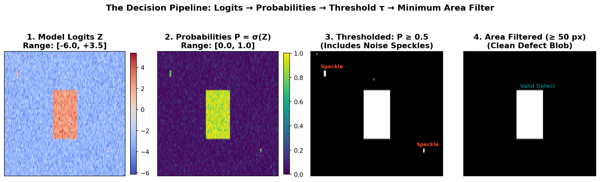
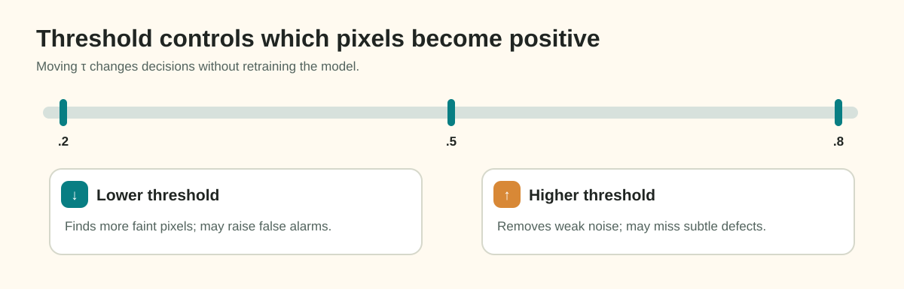

Post-Processing & The Decision Pipeline: Logits to Binary Masks
Training a neural network produces a model that outputs continuous, real-valued tensor fields called logits:
However, neither the competition evaluation metric nor a factory inspection automated sorting system can consume raw floating-point logits. They require hard, discrete binary decisions: Is pixel \((y, x)\) defect_a, or is it clean steel?
The bridge between continuous model outputs and discrete binary predictions is the decision pipeline. Far from being an afterthought, post-processing can dramatically alter your model's leaderboard score. A single stray 3-pixel false-positive speckle on an otherwise clean image can drop that image's Dice score from \(1.0\) to \(0.0\).
In this guide, you will learn how to convert logits to probabilities, tune decision thresholds \(\tau\), analyze connected components with OpenCV, and apply minimum area filtering to suppress sensor noise.
1. Motivation: The Post-Processing Pipeline
The post-processing pipeline transforms raw logits into clean binary masks through four sequential stages:

Figure 7.1: The decision pipeline. (1) Model logits. (2) Probabilities mapped via Sigmoid. (3) Raw binary mask at \(\tau=0.5\) containing noise speckles. (4) Clean defect mask after 8-connected component area filtering (\(A_{\min}=50\text{ px}\)).2. Probability Calibration & Decision Thresholds (\(\tau\))
For a multi-label Sigmoid head, raw logits \(z \in \mathbb{R}\) are squashed into independent probabilities \(\hat{P} \in [0, 1]\) via the sigmoid function:
To convert continuous probabilities \(\hat{P}\) into a binary mask \(\hat{M} \in \{0, 1\}\), you apply a decision threshold \(\tau \in (0, 1)\):
Why \(\tau = 0.5\) is Rarely Optimal:
The default threshold \(\tau = 0.5\) assumes two conditions:
- The neural network's probabilities are perfectly calibrated.
- The cost of a false positive equals the cost of a false negative.
In surface anomaly segmentation, neither assumption holds!
- False positives on empty images are severely penalized because clean images represent a massive fraction of industrial production.
- False negatives on positive images destroy Foreground Dice on rare defects.

3. Connected Component Analysis and Minimum Area Filtering
Even with an optimal probability threshold \(\tau\), segmentation networks frequently predict isolated, high-frequency false-alarm "speckles"—clusters of 1 to 10 pixels triggered by sensor noise, glare, or dust particles.
The Physics of Minimum Defect Dimensions:
Physical defects on steel coils are physical entities produced by mechanical tooling:
- A roll mark or inclusion has a physical surface area.
- An isolated 3-pixel cluster rarely represents a true structural defect; it is almost always sensor noise or model uncertainty.
If you retain these tiny speckles on a clean image:
- Ground Truth: \(Y = 0\) (empty mask).
- Prediction: \(\hat{Y} = 3\text{ pixels}\).
- Dice Score: \(\frac{2 \times 0}{0 + 3} = \mathbf{0.0}\)! A clean sheet receives zero score because of 3 stray pixels.
The Connected Components Solution:
Using OpenCV's cv2.connectedComponentsWithStats, we group 8-connected positive pixels into discrete blobs and measure the area of each blob:
Pixel Grid:
[ 0 0 0 0 0 ]
[ 0 1 1 0 0 ] ──► Component 1: Area = 3 px (< Amin) ──► REMOVED (Zeroed)
[ 0 0 1 0 0 ]
[ 0 0 0 0 0 ]
[ 1 1 1 1 1 ] ──► Component 2: Area = 10 px (≥ Amin) ─► RETAINED (Valid)
[ 1 1 1 1 1 ]import cv2
import numpy as np
def filter_small_components(binary_mask: np.ndarray, min_area: int) -> np.ndarray:
"""Zero out connected components whose total pixel area is less than min_area."""
if min_area <= 0 or binary_mask.sum() == 0:
return binary_mask
# Ensure mask is uint8 {0, 1}
mask_uint8 = binary_mask.astype(np.uint8)
# 8-connected neighborhood analysis
num_labels, labels, stats, _ = cv2.connectedComponentsWithStats(mask_uint8, connectivity=8)
# Initialize clean output
clean_mask = np.zeros_like(mask_uint8)
# Label 0 is background; iterate through detected defect components 1..N
for label_id in range(1, num_labels):
area = stats[label_id, cv2.CC_STAT_AREA]
if area >= min_area:
clean_mask[labels == label_id] = 1
return clean_mask4. Per-Class Calibration: One Size Does Not Fit All
Different defect classes exhibit fundamentally different physical morphologies:
defect_a: May appear as long, thin longitudinal scratches.defect_c: May appear as large, dense clusters of oxide scale or staining.defect_b: An extremely rare defect category where missing a single true instance heavily penalizes your foreground score.
Therefore, applying the exact same threshold \(\tau\) and minimum area cutoff \(A_{\min}\) across all four defect classes is suboptimal:
The Recall Ceiling Trade-off:
Whenever you set a minimum area threshold \(A_{\min}\), you establish a mathematical recall ceiling:
- If the true ground truth in
train.csvcontains a valid defect of size 45 pixels, setting \(A_{\min} = 50\) guarantees that your model can never achieve \(100\%\) recall on that instance! - Rule: Inspect the minimum ground truth instance sizes in your training annotations. Set \(A_{\min}\) strictly below the smallest verified defect instance for each class.
5. Metric Divergence: Naive Dice vs. Competition Score
When you sweep thresholds and area cutoffs on your validation set, be prepared for an important discovery:
Why Do the Optima Diverge?
- Naive Mean Dice: Averages the Dice coefficient across all image-class pairs. Because empty pairs represent the majority of samples, naive Dice strongly rewards aggressive abstention (high thresholds \(\tau \approx 0.7\), large \(A_{\min} \approx 200\)). Predicting empty masks everywhere scores a perfect 1.0 on every clean sheet!
- Competition Score: Places \(70\%\) of its total weight on Foreground Dice computed exclusively over positive pairs. If your model abstains too aggressively, foreground recall collapses, destroying \(70\%\) of your leaderboard score.
Takeaway: Always evaluate your threshold sweep using the competition's explicit foreground-weighted metric. Optimizing thresholds solely for naive mean Dice will systematically bias your model toward over-abstention.
6. Common Mistakes and Diagnostics
| Bug / Pitfall | Root Cause | Observable Symptom | Practical Diagnostic |
|---|---|---|---|
| Over-Filtering Rare Defects | Setting \(A_{\min}\) too high on defect_b. |
Validation score for defect_b drops to exactly 0.0. |
Check per-class positive Dice; verify that true instances are not filtered. |
| 4-Connectivity instead of 8 | Setting connectivity=4 in connectedComponents. |
Diagonal lines are broken into multiple tiny sub-blobs and filtered out. | Always use connectivity=8 for continuous defect segmentation. |
| Slow Python Loops | Iterating over every pixel coordinate \((x, y)\) in pure Python. | Post-processing takes minutes per batch. | Use vectorized NumPy masks: clean_mask[labels == label_id] = 1. |
| Tuning on Test Data | Adjusting thresholds based on public leaderboard feedback. | Severe overfitting to public test subset; private score drops. | Tune \(\tau\) and \(A_{\min}\) strictly on your held-out validation set. |
7. Decisions You Must Make
- Threshold Sweep Grid: Define a search grid for your validation sweep:
- Thresholds: \(\tau \in \{0.30, 0.40, 0.50, 0.60, 0.70\}\)
- Minimum Areas: \(A_{\min} \in \{0, 25, 50, 100, 200\}\) pixels
- Channel Independence: Decide whether you will sweep a single global \((\tau, A_{\min})\) pair or calibrate four independent class-specific pairs.
- Empty Mask Safeguard: Ensure that when all pixels are filtered out, your post-processor emits an all-zero array, ready for RLE empty-space serialization.
8. Try It: Filter Noise Speckles on a Toy Array
Run this diagnostic snippet to verify that 8-connected component filtering removes noise speckles while preserving a genuine defect blob:
import numpy as np
import cv2
# Create a toy 10x10 binary mask
mask = np.zeros((10, 10), dtype=np.uint8)
# 1. Add a genuine 6-pixel defect blob (2x3 rectangle)
mask[2:4, 2:5] = 1
# 2. Add two stray 1-pixel sensor noise speckles
mask[0, 9] = 1
mask[8, 1] = 1
print(f"Original mask active pixels: {mask.sum()} (1 blob of 6 px, 2 speckles of 1 px)")
# 3. Apply area filter with Amin = 4
num_labels, labels, stats, _ = cv2.connectedComponentsWithStats(mask, connectivity=8)
filtered = np.zeros_like(mask)
min_area = 4
for lbl in range(1, num_labels):
area = stats[lbl, cv2.CC_STAT_AREA]
if area >= min_area:
filtered[labels == lbl] = 1
print(f"Filtered mask active pixels: {filtered.sum()}")
assert filtered.sum() == 6, f"Expected 6 pixels, got {filtered.sum()}"
assert filtered[0, 9] == 0 and filtered[8, 1] == 0, "Speckles were not removed!"
assert filtered[2, 2] == 1, "Genuine defect was corrupted!"
print("✓ Noise speckle filtering verified successfully!")9. Authoritative Documentation & References
- OpenCV Connected Components:
cv2.connectedComponentsWithStatsAPI - Scikit-Learn Precision-Recall Curve: Tuning Decision Thresholds
- Davis & Goadrich (2006): The Relationship Between Precision-Recall and ROC Curves